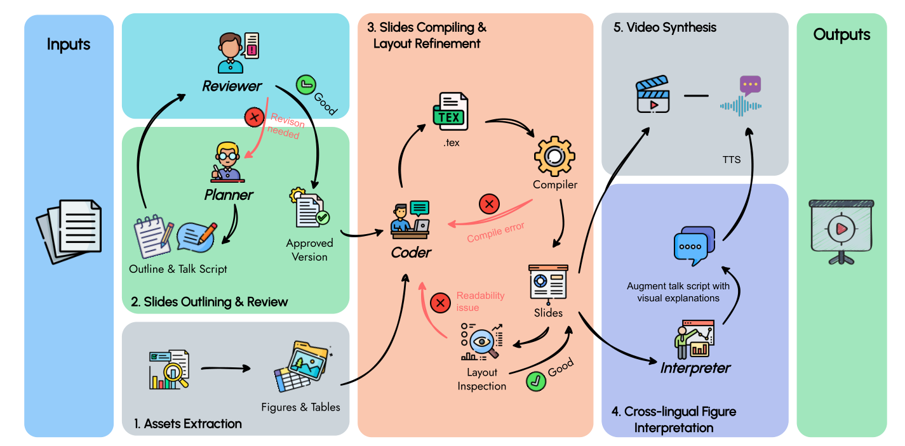
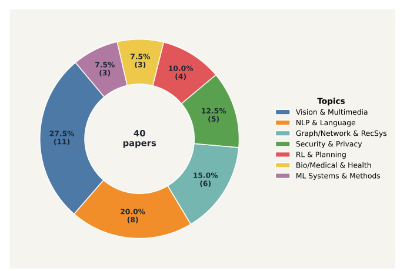
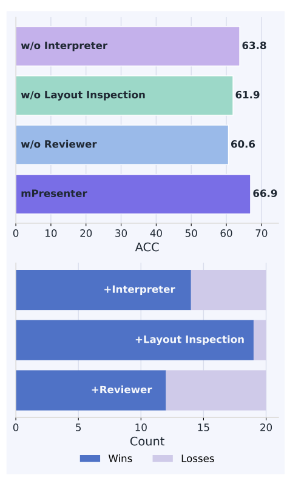
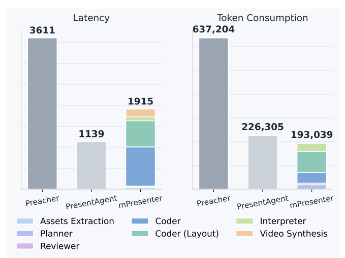

Multi-agent collaboration
Planner, Reviewer, Coder, and Interpreter agents coordinate outline design, critique, slide creation, and visual explanation.
An end-to-end multilingual Paper2Video framework that turns academic PDFs into narrated presentation videos through multi-agent planning, layout-aware slide generation, and cross-lingual figure interpretation.
Abstract
mPresenter decomposes paper-to-video generation into specialized agentic stages for planning, critique, slide coding, visual inspection, figure interpretation, and video synthesis.
Generating presentation videos from scientific papers is challenging because systems must reason over long-document discourse, translate dense findings into slide-level narratives, preserve layout readability, and explain visual evidence across languages. Existing Paper2Video systems are largely monolingual and often rely on single-pass generation. mPresenter addresses these limitations with a multi-agent framework that produces Beamer LaTeX slides, visually inspects rendered outputs, augments narration with cross-lingual figure interpretation, and synthesizes final presentation videos. The project also introduces mPreBench, an expert-curated multilingual benchmark for evaluating Effective Information Transfer through question answering.
Framework
The pipeline extracts paper assets, plans an outline and talk script, refines slides through compiler and readability feedback, interprets figures across languages, and synthesizes narrated video.

Planner, Reviewer, Coder, and Interpreter agents coordinate outline design, critique, slide creation, and visual explanation.
The Interpreter Agent analyzes figures and explains visual elements that remain in the source language.
Executable Beamer LaTeX is compiled and visually inspected to improve readability and slide fidelity.
The system is designed for effective knowledge transfer from scientific papers to presentation videos.
mPresenter keeps token use and latency low while maintaining high-quality video generation.
Demo Videos
Example outputs in English and Chinese generated from scientific papers.
Benchmark
mPreBench is an expert-curated multilingual benchmark for evaluating whether generated presentation videos preserve the scientific information needed by viewers.
The benchmark covers 40 academic papers: 20 English papers from NeurIPS 2025 and ACL 2025, and 20 Chinese papers from Chinese Journal of Computers. Each paper is paired with expert-written multiple-choice questions translated into English, Chinese, German, Japanese, and Arabic.

Results
Ablations show the contribution of the Interpreter, layout inspection, and Reviewer. Efficiency analysis shows low latency and token consumption compared with baselines.


Resources
The implementation and mPreBench benchmark resources are available on GitHub.
Citation
@inproceedings{han2026mpresenter,
title = {mPresenter: An Agentic Framework for Generating Multilingual Presentation Videos from Scientific Papers},
author = {Han, Wenhan and Xiao, Xiao and Pechenizkiy, Mykola and Fang, Meng},
booktitle = {Findings of the Association for Computational Linguistics: ACL 2026},
year = {2026}
}